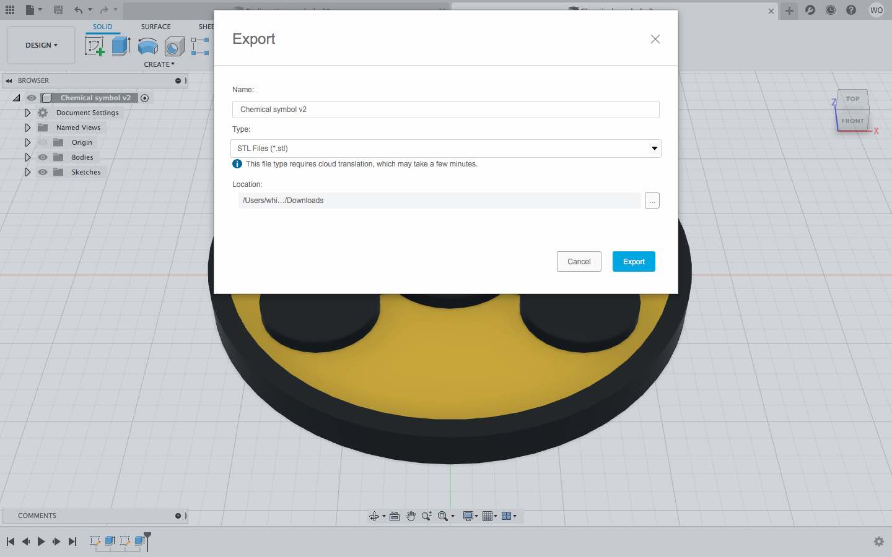
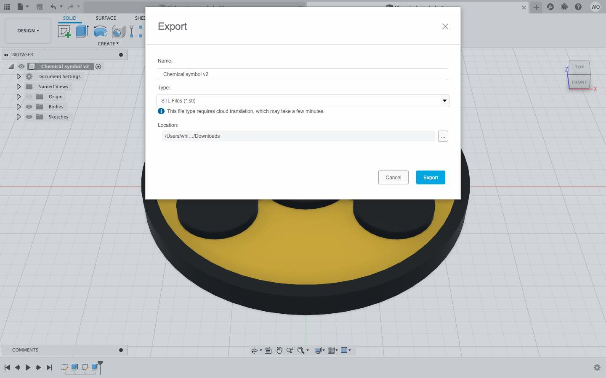

Contents
Part 1: Using Parametric Design
Part 2: Designing the Radioactive Symbol
Part 3: Designing the Chemical Symbol
Part 4: 3D Printing
Design Files
Using Parametric Design
Before this class, I had used Fusion for a variety of projects, so I was comfortable navigating the software. However, I did not have a great understaning of the parameters or constraints in Fusion, so I was often confused and frustrated when trying to make sketches with them. For the first part of this assignment I practiced using parameters so that I could get a better idea of their functions and capabilities.
I began by sketching some random shapes. Then, with some constraints automatically applied, I manipulated the size of the circle to see how the others would be affected.
Next, I tried removing all the constraints, just to see what would happen. Then, I added the coincident and parallel features back in.
I noticed that two sides of the rectangle were not connecting, so I added a coincedent there.
Then, I made three sides of the rectangle tangent to the circle, and decided to move a diagonal line to the midpoint of the rectangle's bottom side.
Next, I worked on fixing the lines in place so that they could not be rearranged. Finally, I extruded them.

Designing the Radioactive Symbol
By following the class tutorial instructions, I replicated the radioactive symbol in Fusion. I began by sketching a circle and extruding it. Then, I made another sketch on top of that form.
I added some cicles and a hexagon to the sketch.

Here, I aligned the hexagon with the horizontal axis by using the horazontal constraint, and made it into a construction line so that it would not show up in my final design.
Then I added lines radiating from every vertex of the hexagon. To space these lines equally, I used construction lines to draw another hexagon around the radiating lines, and added constraints to make all of the hexagon's sides equal.
Once I drew another small circle, the sketch was ready to extrude.
Lastly, I added color, using the appearance feature.
Designing the Chemical Symbol
For the next part of this assignment, I decided to model the chemical symbol. I began this model just like the radioactive symbol, by extruding a circle and drawing another sketch on top. After that, I moved on to the details of this particular design.
I noticed that the symbol was essentialy composed of three branches. So, I drew some construction lines, and equally spaced them, to help guide my drawing.
Finding a good way to draw the stems of each branch was a little tricky. I tried a few different methods, such as using the rectangle tool and rotating it, but eventually I found that the simplest way to do it was to connect the central and outer circles with two lines. Also, I added some shorther construction lines to help even out the stem lines. Some constraints were automatically applied to this shape, and I discovered that the movement of one line was mirrored on the other.
Using the "Circular Pattern" tool, I duplicated and revolved the stem part of the design around the central axis twice to match up with the other radiating circles. After doing this, I realized that I could have used the "Circular Pattern" tool from the start, and then I would have only needed to draw one branch and fewer construction lines.
Regardless, I moved on to my next step, which was to add the other little lines and circles shown in the chemical symbol design. I had to lock a couple of the lines to keep them fixed in their spots.
By then, my sketch was finished. I was ready to select parts of the design and extrude them. After this, I compared my model to the original chemical symbol image.
After looking at the two symbols side by side, I noticed that the radiating circles on mine were a bit small. So, I went back to the sketch and enlarged them.
Afterward, I changed the color to make it look nice, and finally, I exported it as an STL file.
 

3D Printing
Once I hade the STL file, I imported it into PrusaSlicer. I set the layer height to be .20 mm and the infill to 15%. In addition, I added a color change so that the raised part of the 3D model could be a different color from the base.
I exported the g-code to an SD card and inserted that card in into a Prusa MK3.
The machine preheated before unloading the previous filament. Then, I loaded a spool of yellow PLA.
Once I selected my model's filename, under "Print from SD", I began the acual print. It took a little under a half hour to print altogether.
At about 20 minutes in, the machine prompted a color change. I had never tried doing a color change on a Prusa MK3 printer before, so this part was new to me.
Overall, the print went very smoothly. There were no major issues throughout the process.